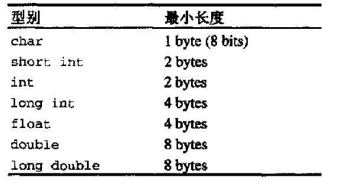
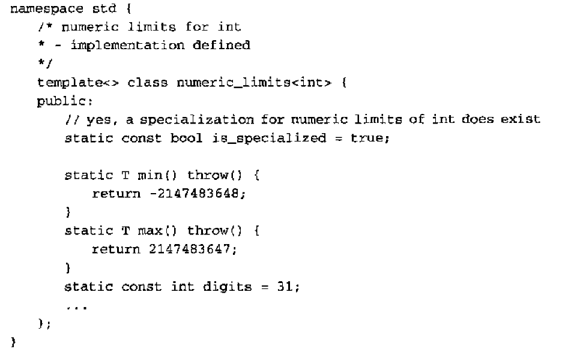
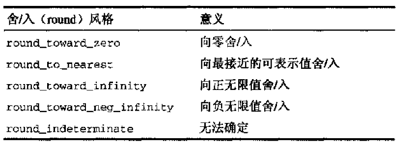
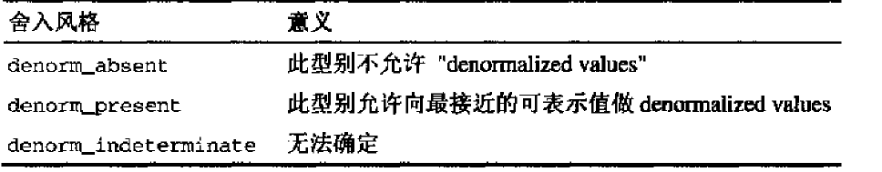

pair
对组将两个值视为一个单元 定义于<utility>中 为struct
注意
pair存储到两个数据型别可不同(如std::pair<intint,float>) 当多个pair比较大小 第一个数据有较高优先级 std::make_pair返回一个pair 可省略型别(如 std::make_pair(1,1.1) 或std::make_pair<int,float>(1,1.1) 第一个pair的second是double 第二个是float)
auto_ptr
用以处理局部资源动态申请而无法删除 例如在函数f中先new 而忘记delete 或由于异常而跳过delete函数 以auto_ptr为class成员替代指针从而使其在class生存期结束时自动释放资源 而无需在析构中delete
example
std::auto_ptr<int>lp=(new int(3));
注意
auto_ptr只能以动态指针为构造 一旦构造将获取指针的所有权 当一个auto_ptr有用指针所有权时析构时会调用delete 故不需delete指针 不应该引用auto_ptr这会导致指针所有权不清 copy构造函数 和 assignment会导致指针所有权 转移 auto_ptr的get函数返回动态指针地址 若auto_ptr失去指针所有权 get返回null 在构造函数中new 但在构造中错误由于没有构造完成所有不会析构 于是内存遗失 但若以auto_ptr为成员 可完美解决(成员auto_ptr失去生存期 auto_ptr的析构当然或被调用)
易错
auto_ptr之间不能共享所有权 所有权只能同时被一个auto_ptr拥有 auto_ptr不支持数组 auto_ptr不满足STL容器对其元素的要求
常用函数
| 声明 | 描述 |
| default构造 | 生成一个不拥有任何对象的auto_ptr 将auto_ptr的值初始化为0 |
| auto_ptr::auto_ptr(T* ptr) throw() | 生成auto_ptr 且拥有指针ptr |
| copy构造 | 生成auto_ptr 且拥传入auto_ptr拥有的指针 |
| = | 同copy构造 |
| 析构 | 若拥有指针 delete |
| T* auto_ptr::get() const throw() | 返回auto_ptr所有对象地址(指针地址) 未拥有任何对象 返回null 不会改变所有权 |
| T& auto_ptr::operator*()const() throw() | 若未拥有任何对象 引发未定义行为 |
| T& auto_ptr::operator->()const() throw() | 若未拥有任何对象 引发未定义行为 |
| T* auto_ptr::release() throw() | 放弃所有权 返回所有指针地址(若未拥有任何对象返回null) |
| void auto_ptr::reset(T* ptr=0) throw() | 以ptr重新初始化auto_ptr当然且拥有之 若auto_ptr原本拥有对象，则先delete |
数值极限
通过template numeric_limits提供极值替代c的预处理常数 整数常数定义于<climits>浮点<cfloat>
内建型别最小长度 
特化 
example std::cout<<std::numeric_limits<int>::max()<<std::endl;
numeric_limits成员函数
| 函数 | 描述 |
| is_specialized | 型别是否有极值 |
| is_signed | 型别带有正负号 |
| is_integer | 整数型别 |
| is_exact | 计算结果不产生舍入误差(对所有整数型别均为true) |
| is_bounded | 数值集的个数有限(所有内建型别均为true) |
| is_modulo | 两正数相加结果可能因溢出而回绕为较小值 |
| is_iec559 | 遵从IEC559 和 IEEE754 标准 |
| min() | 最小值 |
| max() | 最大值 |
| digits | 字符和整数:不带正负号之位个数 浮点:位数中之radix位个数 |
| digits10 | 十进制数的个数 |
| radix | 整数:表示式的底数，几乎总是2 浮点数：指数式的底数 |
| min_exponent | 底数radix的最小负整数指数 |
| max_exponent | 底数radix的最大正整数指数 |
| min_exponent10 | 底数10的最小负整数指数 |
| max_exponent10 | 底数10的最大正整数指数 |
| epsilon | 1和最接近1的值之间的差距 |
| round_style | 舍入风格 |
| 函数round_error() | 最大舍入误差量测 |
| has_infinity | 有“正无穷大”表示式 |
| infinity | 正无穷大 |
| has_quiet_NaN | 本型别有不发信号的“非数值”表示式 |
| quiet_NaN | 如果可以，安静的表述出“这不是个数值” |
| has_signaling_NaN | 本型别有会发出信号的“非数值”表示式 |
| signaling_NaN | 如果可以，发出信号表述出“这不是个数值” |
| has_denorm | 本型别是否允许非标准化数值 |
| has_denorm_loss | 准确度的遗失是以一个非标准化值而不是一个精密的结果被侦测出来 |
| denorm_min | 最小的非标准化正值 |
| traps | 已实作出Trapping |
| tinyness_before | 在舍入前可侦测出tinyness |
舍入风格 
demonmalization style 
辅助函数
算法程序库(定义于<algorithm>)内含三个辅助函数，用来挑选两值中较大 较小 或交换
min max声明
namespace std{
template<class T>
inline const T& min (const T& a,const T &b)
{
return b<a?b:a;
}
}
max 同min
如果两值相等通常返回第一值(所谓通常也可不如此 故程序不应依赖此)
提供额外比较参数的声明
namespace std{
template<class T,class Compare>
inline const T& min (const T& a,const T& Comare comp)
{
return omp(b,a)?b:a;
}
}
Comare需要是函数或者仿函数
swap声明
namespace std{
template<class T>
inline void swap(T& a,T& b)
{
T temp(a);
a=b;
b=temp;
}
}
由声明可知 调用swap 需要copy构造函数和 assignment存在方可调用
辅助性比较操作符
有四个template functions 分别定义了!=,>,<=,>=他们依据==和<完成 被定义于<utility>中 std::rel_ops名字空间内 故对于自定义型别自需要提供==和<的全局比较特化函数 并使用 std::rel_ops名字空间便自动获得此四种操作符
examplate
#include <iostream>>
#include <utility>
using namespace std::rel_ops;
class test
{
public:
int a;
int b;
test(int a,int b)
{
this->a=a;
this->b=b;
}
};
bool operator==(const test& x, const test& y)
{
return (x.a+x.b)==(y.a+y.b);
}
bool operator<(const test& x, const test& y)
{
return (x.a+x.b)<(y.a+y.b);
}
int _tmain(int argc, _TCHAR* argv[])
{
test a(1,2),b(3,4);
std::cout<<(a>b)<<std::endl;
system("pause");
return 0;
}
注意
比较的两个型别可以不同只需可以比较(== <)就行 因为实作版本中 对于操作符 用了两个不同的型别 template<class a,class b> 但此非c++标准程序库所支持的做法，所以若用两个型别 可能会无法移植
其他
<cstddef>
| 标识符 | 描述 |
| NULL | 指针值，表示“未定义”或“无值” |
| size_t | 一种无正负号的型别，表示大小 |
| ptrdiff_t | 一种有正负号的型别，表示指针间的距离 |
| offsetof | 表示一个成员在struct或union中的偏移量 |
<cstdlib>
| 定义 | 描述 |
| exit(int status) | 退出程序并且清理static对象和，清空缓冲区，关闭io句柄 |
| EXIT_SUCCESS | 程序正常结束 |
| EXIT_FAILURE | 程序不正常结束 |
| abort() | 退出程序 不做任何清理 |
| atexit(void(*function)()) | exit退出时先调用的函数 |